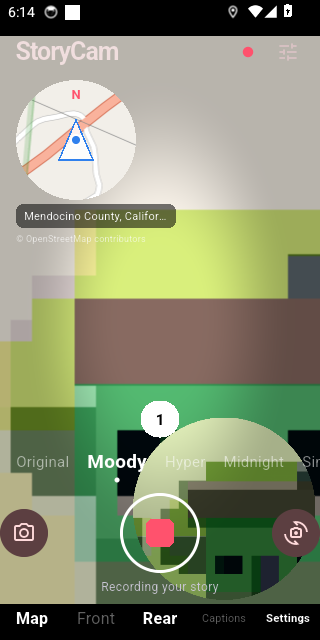

I went traveling and wanted to vlog for my family — so I built the camera app I needed
I was traveling, and I wanted to send my family and friends videos that felt like being there with me. Not a photo dump, not a shaky clip of a street — a video where they could see my face and the place at the same time.

My phone made me choose. Selfie mode showed me talking, but not what I was looking at. The back camera showed the place, but not me in it. I could record one, then the other, then stitch them together — but nobody does that on a trip. By the time you open an editor, the moment is gone, and your family gets the video three weeks later, or never.
So I looked for a free camera app that records the front and back cameras together, into one video, while I am recording. I could not find one that just did that — free, no account, no watermark, no “upload to our cloud and we will send you a link.” So I built it.
What StoryCam does
StoryCam is a free Android app. You open it, you press record, and it records both cameras at the same time into one portrait video: the place fills the screen, and you are in a circle in the corner, reacting to it live. What you see on screen is exactly what gets saved.


- Two cameras, one video. Front and back record together — no switching, no editing, no second take.
- Filters. A slider with looks from clean to game-style, so a plain walk looks like something you actually want to send.
- Captions in Russian and English. My family speaks both. The app adds captions on the phone itself, with the Whisper speech model — no account, no cloud, your audio never leaves the device.
- A map on screen. A small live map sits in the corner while you record, and it is burned into the video itself, so the video shows where it was taken.
- Free. No paywall, no subscription, no paid version. The app is free, and that is the whole model.
Why it matters for a trip
A travel video for family is not a production. It is a message: here I am, this is what I see, I wish you were here. The front camera is you talking to them. The back camera is the thing you want them to see. Put them in the same frame and the video does the job by itself — you press stop, you send it, and your family watches it the same evening.
That is the whole idea. If you are traveling and you want the people back home to feel like they came with you, try it.
Get StoryCam — free
StoryCam is in testing on Google Play now, and the free APK is on GitHub. It needs an ARM64 Android phone with front-and-back camera support (Pixel 6 and newer, Galaxy S22 and newer work; other phones fall back to single-camera recording).